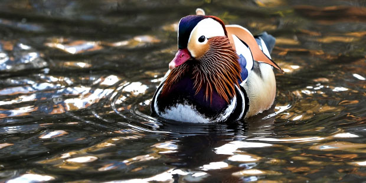

Mandalin ördeği (Aix galericulata), Uzak Doğu kökenli, özellikle Çin ve Japonya’da görülen, dünyanın en göz alıcı ördek türlerinden biridir. Ortalama 40–50 cm uzunluğa ulaşan bu kuşlar, erkek bireylerde turuncu, mor, yeşil ve beyazın birleştiği ihtişamlı tüyleriyle dikkat çeker; dişiler ise daha sade gri ve kahverengi tonlara sahiptir. Doğal yaşam alanlarında göl ve nehir kenarlarını tercih eden mandalin ördekleri, tohum, bitki ve küçük su canlılarıyla beslenir. Sosyal yapılarıyla çift halinde yaşayan bu kuşlar, üreme döneminde gösterişli davranışlar sergiler. Doğru bakım koşullarında 10–15 yıl yaşayabilen mandalin ördeği, yalnızca estetik güzelliğiyle değil, aynı zamanda zarif duruşu ve kültürel sembolik değeriyle de kuş dünyasında özel bir yere sahiptir.